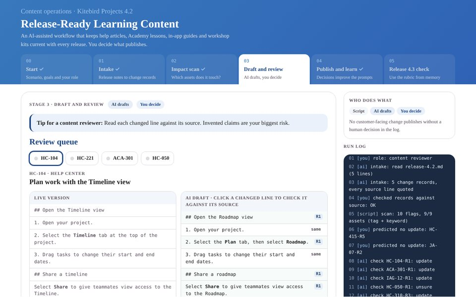

Release-Ready Learning Content

Click the image to experience the project.Purpose: Every SaaS release quietly breaks help articles, Academy lessons and workshop kits, and asking AI to “rewrite the docs” can invent features. I designed an AI-assisted workflow that flags what a release affects, drafts the smallest correct fix with a citation to the release notes, and leaves every publish decision to a person. Built on a fictional B2B SaaS product (Kitebird Projects).
Tools: Claude (four reusable skills), Python, JSON content schema
Highlights: Workflow design, prompt and skill writing, content modeling, review rubric, human-in-the-loop quality checks, Action Mapping, Gilbert’s Behavior Engineering Model, ABCD objectives, retrieval practice, Kirkpatrick evaluation plan
Project Deliverables: Interactive Demo, Workflow Kit, Draft Skill (v1.1), Impact Scan Script, Run Log Template